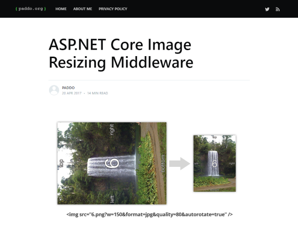
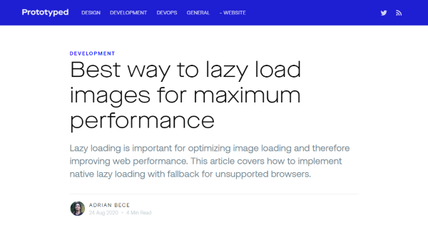
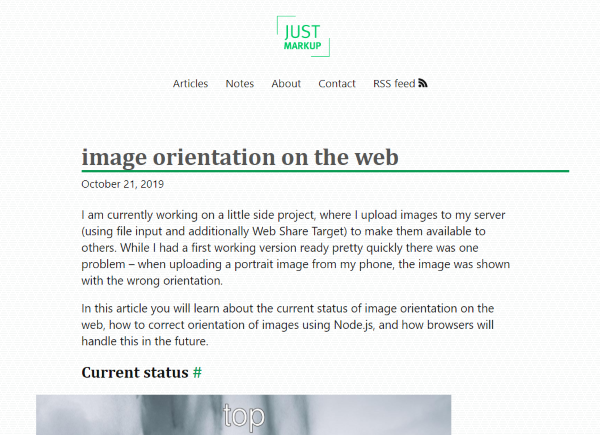
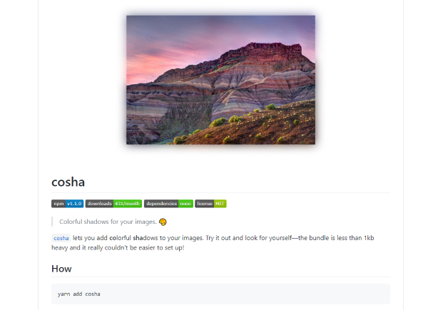
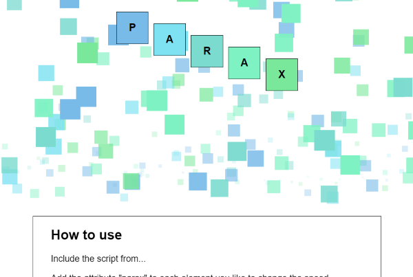
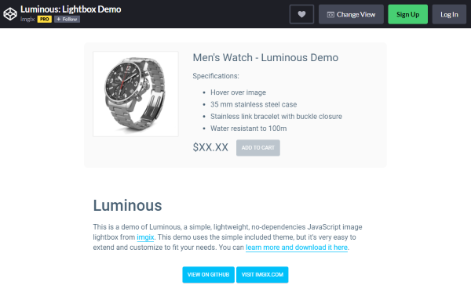
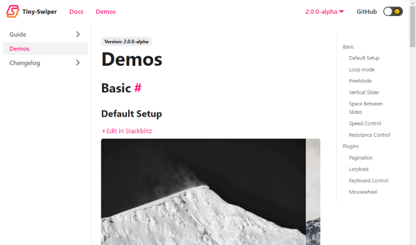

Discoveries #5
In this episode of the Discoveries (almost) everything is about images and the web. There are so many pitfalls to do it wrong, but many more possibilities to do it right, especially with these resources I found in the last few weeks.
- ASP.NET Core Image Resizing Middleware
- Best way to lazy load images for maximum performance
- image orientation on the web
- cosha - Colorful shadows for your images
- parax-bg - Parallax Backgrounds
- parax - Parallax Elements
- Luminous Lightbox
- Tiny-Swiper - Image Carousel
ASP.NET Core Image Resizing Middleware
by Jeremy Paddisonhttps://www.paddo.org/asp-net-core-image-resizing-middleware/
Jeremy shows in his blog post the possibilities of dealing with images in ASP.NET Core in terms of format, orientation and quality. A must read for every .NET developer.
Best way to lazy load images for maximum performance
by Adrian Becehttps://blog.prototyp.digital/best-way-to-lazy-load-images-for-maximum-performance/
Delivering images on the web is difficult due to different devices and bandwidths. Adrian shows how to achieve a maximum of performance on lazy loading images via native JavaScript.
image orientation on the web
by Michael Scharnaglhttps://justmarkup.com/articles/2019-10-21-image-orientation/
Automatic uploading and viewing images fails sometimes on portrait shots, because of misintrepretated orientation information by the different browsers. Michael adresses this problem with a Node.JS solution.
cosha - Colorful shadows for your images
by Robin Löffelhttps://github.com/robinloeffel/cosha
Adding a blurry shadow under an image to let the photo stand out from the background, is a nice technique to draw the users attention. Robin goes one step further with his JavaScript solution on colorful shadows, which represents the colors of the image.
parax-bg - Parallax Backgrounds
by Tobias Buschorhttps://github.com/nuxodin/parax-bg
Parallaxing backgrounds are fairly attracting and so it is with Tobias’ approach on that for developers: easy to use and fast.
parax - Parallax Elements
by Tobias Buschorhttps://github.com/nuxodin/parax
If you just want to parallax some elements instead of backgrounds, Tobias has also a solution for that: Parax.
Luminous Lightbox
by imgixhttps://github.com/imgix/luminous
There are tons of image lightboxes out there and here is another one: Luminous from imgx. It is my favourite and I use it in this blog. Its lightweight and easy to use, for the user and the developer. A pearl…
Tiny-Swiper - Image Carousel
by Joe Harrishttps://tiny-swiper.joe223.com/docs/demo/
The same applies to image carousels, but Tiny-Swiper is here outstanding too. It is simple, but powerful and well documented. A must use…
You can interact with this article (applause, criticism, whatever) by mention it in one of your posts, which will also be shown here as a Webmention ... or you leave a good old comment with your GitHub account.
Webmentions
No Webmentions yet...
In case your blog software can't send Webmentions, you can use this form to submit me a mention of this article...


 There are many Mastodon instances out there.
Tell me yours and I will redirect you to the share dialog of your server:
There are many Mastodon instances out there.
Tell me yours and I will redirect you to the share dialog of your server:
Comments